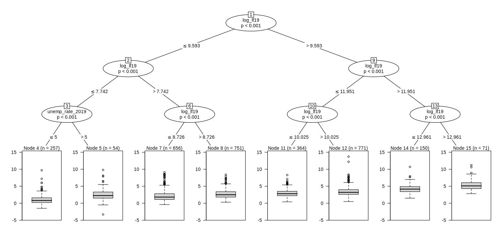

Which counties took the biggest unemployment hits in 2008 and 2020
Great Recession damage sorted on pre-crisis unemployment; COVID damage sorted on county size. Both trees clear the null and stay within reach of OLS.
methods/partykit/APPROVAL.md (workflow, Stage 4b). Until then the skill it feeds is a DRAFT.The short version
- 3,074 counties. The Great Recession rise in unemployment (2007→2010) sorts first on pre-crisis unemployment (≤ 4.3%). The COVID rise (2019→2020) sorts on county size, with labor force at about 14.6k as the root.
- COVID leaf means run from 1.10 pp (labor force ≤ ~2.3k and 2019 unemployment ≤ 5%) to 5.34 pp (labor force > ~426k).
- It passes the iid null (0% and 4% spurious splits). Its CV R² ties CART and stays within 0.035 of OLS while giving 7–8 readable groups. The trees reproduced exactly; the CV scores moved by at most 0.018 because the fold draw differs.
Question
Which pre-shock county traits mark the counties hit hardest by the two big unemployment shocks?
Data used
The Drive Sheet "County econ panel — GDP, unemployment, population, migration, poverty (FIPS x year)", panel and Education tabs (manifest.json). Pre-shock traits: unemployment rate, prior 6-year log GDP growth, RUCC, metro flag, share with a bachelor's degree (2000, or 2008–12), and log labor force. n = 3,074 counties with complete data. Only leaf-level aggregates are shown.
What we ran
methods/partykit/applications/3/run.R fits ctree(alpha = 0.01, minbucket = 50, maxdepth = 3) for each shock. It also runs 5-fold CV against the mean, CART and OLS (with ctree at maxdepth 4 inside the CV); repeats the CV over 10 seeds; and runs 50 iid-permutation nulls.
Figures and tables


| Great Recession leaf | n | mean shock (pp) |
|---|---|---|
| unemp 2007 ≤ 4.3 & small labor force | 305 | 2.20 |
| unemp 2007 ≤ 4.3 & largest labor forces | 721 | 4.23 |
| unemp 2007 > 4.3 & bachelor's 2000 ≤ 12.1% & not tiny | 754 | 5.53 |
| unemp 2007 > 4.3 & bachelor's > 12.1% & large | 519 | 5.00 |
All leaves and exact thresholds
See A4_gr_leaves and A4_cv_leaves in results.json.
Original vs reproduced
| number | original | reproduced |
|---|---|---|
| GR root / leaves | unemp 2007 ≤ 4.3 / 7 | same |
| COVID root / leaves | log labor force 2019 ≤ 9.593 / 8 | same |
| GR CV R²: ctree / CART / OLS | 0.185 / 0.189 / 0.200 | 0.197 / 0.207 / 0.203 |
| COVID CV R²: ctree / CART / OLS | 0.251 / 0.259 / 0.290 | 0.256 / 0.253 / 0.289 |
Robustness
- 10 CV seeds: ctree 0.173–0.199 (GR) and 0.255–0.278 (COVID); CART 0.188–0.212 and 0.256–0.277; OLS 0.201–0.203 and 0.287–0.292.
- iid-permutation null: 0% (GR) and 4% (COVID) of 50 permutations split. Counties are a cross-section, so the iid null is the right one here.
Limitations
- Spatial correlation between neighbouring counties isn't modelled, so the iid null may be a little generous.
- OLS still predicts slightly better. The tree's value is the readable subgroups, not accuracy.
Takeaway
This is the use partykit is built for. The two shocks hit different kinds of counties: in 2008 the already-weak, less-educated places; in 2020 the big ones.
Back to the method
partykit trees: readable subgroups that pass on a cross-section and overfit time series
Conditional inference trees and model-based trees reproduced exactly. They clear every gate on 3,074 counties, but a circular-shift null breaks both time-series uses. Recommended (scoped), awaiting approval. A well-known package, so less of a scout find.